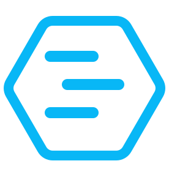

Service Status
All active applications, APIs, web endpoints, and recurring billing schedules have been permanently discontinued and taken offline.
ENDPOINTS
100% OFFLINE

Thank you to everyone who supported, tested, and collaborated with CodeVelo.dev LLC throughout our journey. After careful consideration, we have made the decision to conclude operations and wind down the platform.
All active applications, developer tools, and new account registrations have permanently closed. We are deeply grateful for the trust and encouragement you shared with us along the way.
All active applications, APIs, web endpoints, and recurring billing schedules have been permanently discontinued and taken offline.
In accordance with our wind-down commitments, all customer records, credentials, and application databases have been securely wiped and purged from production servers.
This static notice will remain published at codevelo.dev until the current domain registration expires in October 2027.
If you have a lingering administrative, tax, legal, or final billing question regarding CodeVelo.dev LLC, please reach out via email.
Note: Ensure email forwarding (e.g., Cloudflare Email Routing) is active if Google Workspace has been canceled.